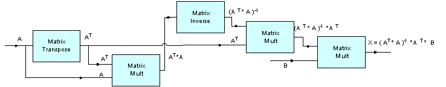

Matrix Example¶
-
group
MatrixExample Refer riscv_matrix_example_f32.c
- Description:
Demonstrates the use of Matrix Transpose, Matrix Muliplication, and Matrix Inverse functions to apply least squares fitting to input data. Least squares fitting is the procedure for finding the best-fitting curve that minimizes the sum of the squares of the offsets (least square error) from a given set of data.
- Algorithm:
The linear combination of parameters considered is as follows:
A * X = B, whereXis the unknown value and can be estimated fromA&B.The least squares estimate
Xis given by the following equation:X = Inverse(A * A) * A * B- Block Diagram:

- Variables Description:
A_f32input matrix in the linear combination equationB_f32output matrix in the linear combination equationX_f32unknown matrix estimated usingA_f32&B_f32matrices
- NMSIS DSP Software Library Functions Used:
riscv_mat_init_f32()
riscv_mat_trans_f32()
riscv_mat_mult_f32()
riscv_mat_inverse_f32()